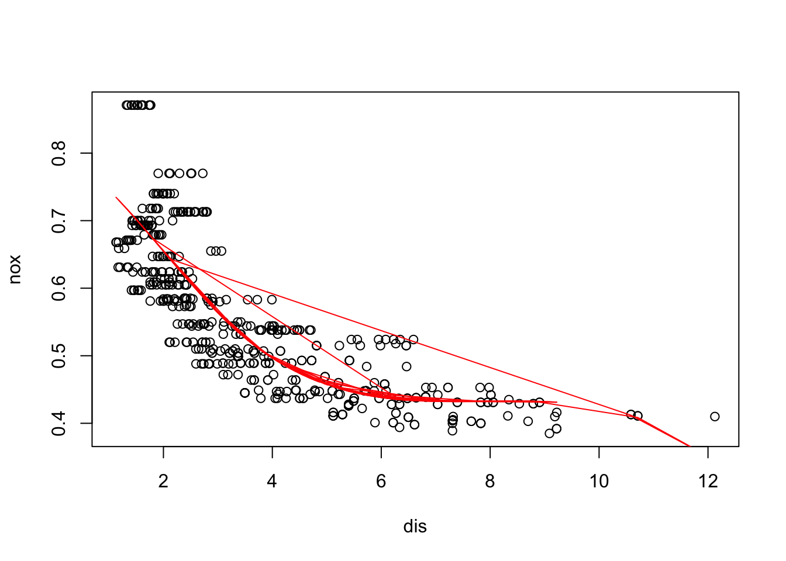
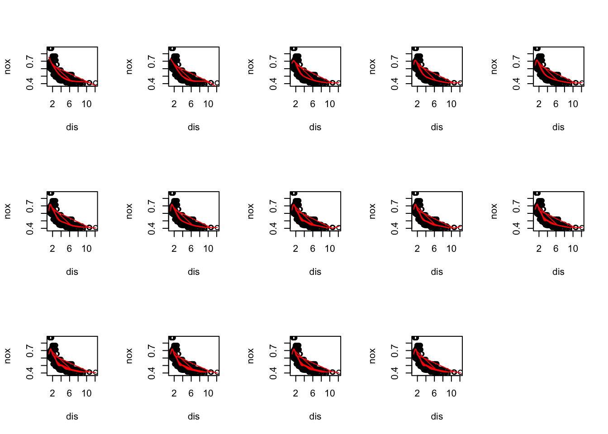
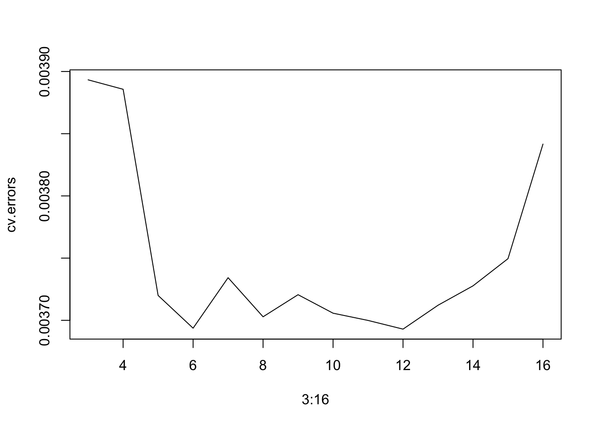
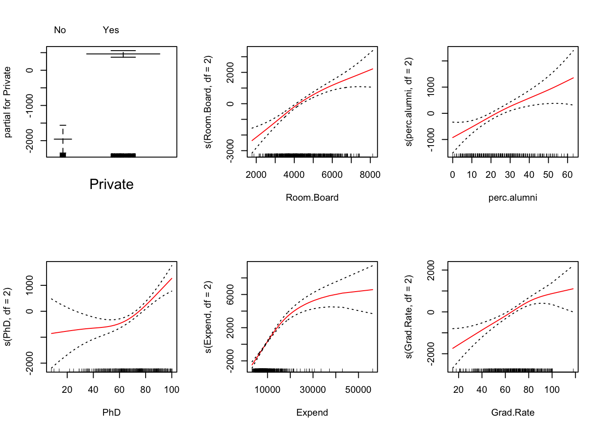

2 Assignment 1
2.1 Tutorial 01 Q3
2.1.1 Part a
# Load the Boston dataset
set.seed(1)
data("Boston", package = "MASS")
# Fit a regression spline with df=4
library(splines)
fit = lm(nox ~ bs(dis, df=4), data=Boston)
summary(fit)##
## Call:
## lm(formula = nox ~ bs(dis, df = 4), data = Boston)
##
## Residuals:
## Min 1Q Median 3Q Max
## -0.124622 -0.039259 -0.008514 0.020850 0.193891
##
## Coefficients:
## Estimate Std. Error t value Pr(>|t|)
## (Intercept) 0.73447 0.01460 50.306 < 2e-16 ***
## bs(dis, df = 4)1 -0.05810 0.02186 -2.658 0.00812 **
## bs(dis, df = 4)2 -0.46356 0.02366 -19.596 < 2e-16 ***
## bs(dis, df = 4)3 -0.19979 0.04311 -4.634 4.58e-06 ***
## bs(dis, df = 4)4 -0.38881 0.04551 -8.544 < 2e-16 ***
## ---
## Signif. codes: 0 '***' 0.001 '**' 0.01 '*' 0.05 '.' 0.1 ' ' 1
##
## Residual standard error: 0.06195 on 501 degrees of freedom
## Multiple R-squared: 0.7164, Adjusted R-squared: 0.7142
## F-statistic: 316.5 on 4 and 501 DF, p-value: < 2.2e-16# Plot the fit
plot(nox ~ dis, data=Boston)
lines(Boston$dis, fitted(fit), col="red")
2.1.2 Part b
# Fit regression splines for a range of degrees of freedom and plot the fits
dfs = c(3, 4, 5, 6, 7, 8, 9, 10, 11, 12, 13, 14, 15, 16)
par(mfrow=c(3,5))
fits = lapply(dfs, function(df) {
fit = lm(nox ~ bs(dis, df=df), data=Boston)
plot(nox ~ dis, data=Boston)
lines(Boston$dis, fitted(fit), col="red")
fit
})
# Report the resulting RSS
rss = sapply(fits, function(fit) sum(residuals(fit)^2))
print(rss)## [1] 1.934107 1.922775 1.840173 1.833966 1.829884 1.816995 1.825653 1.792535
## [9] 1.796992 1.788999 1.782350 1.781838 1.782798 1.783546
Describe results here.
2.1.3 Part c
# Perform cross-validation to select the best degrees of freedom
library(boot)
cv.errors <- sapply(3:16, function(i){
lm.fit <- glm(nox ~ bs(dis, df = i), data=Boston)
return(cv.glm(Boston, lm.fit, K = 10)$delta[2])
})
plot(3:16, cv.errors,type = "l")
which.min(cv.errors)## [1] 10We get the lowest error when df=10.
2.2 Tutorial 02 Q4
2.2.1 Part a
# Load the College dataset
set.seed(1)
data("College", package = "ISLR")
# Split the data into training and test sets
train <- sample(nrow(College) * 0.7)
train_set <- College[train, ]
test_set <- College[-train, ]
# Perform forward stepwise selection on the training set
library(leaps)
fit <- regsubsets(Outstate ~ ., data = College, subset = train, method = 'forward')
fit.summary <- summary(fit)
fit.summary## Subset selection object
## Call: regsubsets.formula(Outstate ~ ., data = College, subset = train,
## method = "forward")
## 17 Variables (and intercept)
## Forced in Forced out
## PrivateYes FALSE FALSE
## Apps FALSE FALSE
## Accept FALSE FALSE
## Enroll FALSE FALSE
## Top10perc FALSE FALSE
## Top25perc FALSE FALSE
## F.Undergrad FALSE FALSE
## P.Undergrad FALSE FALSE
## Room.Board FALSE FALSE
## Books FALSE FALSE
## Personal FALSE FALSE
## PhD FALSE FALSE
## Terminal FALSE FALSE
## S.F.Ratio FALSE FALSE
## perc.alumni FALSE FALSE
## Expend FALSE FALSE
## Grad.Rate FALSE FALSE
## 1 subsets of each size up to 8
## Selection Algorithm: forward
## PrivateYes Apps Accept Enroll Top10perc Top25perc F.Undergrad
## 1 ( 1 ) " " " " " " " " " " " " " "
## 2 ( 1 ) " " " " " " " " " " " " " "
## 3 ( 1 ) "*" " " " " " " " " " " " "
## 4 ( 1 ) "*" " " " " " " " " " " " "
## 5 ( 1 ) "*" " " " " " " " " " " " "
## 6 ( 1 ) "*" " " " " " " " " " " " "
## 7 ( 1 ) "*" " " " " " " " " " " " "
## 8 ( 1 ) "*" " " " " " " " " " " " "
## P.Undergrad Room.Board Books Personal PhD Terminal S.F.Ratio
## 1 ( 1 ) " " " " " " " " " " " " " "
## 2 ( 1 ) " " "*" " " " " " " " " " "
## 3 ( 1 ) " " "*" " " " " " " " " " "
## 4 ( 1 ) " " "*" " " " " " " " " " "
## 5 ( 1 ) " " "*" " " " " "*" " " " "
## 6 ( 1 ) " " "*" " " " " "*" " " " "
## 7 ( 1 ) " " "*" " " "*" "*" " " " "
## 8 ( 1 ) " " "*" " " "*" "*" "*" " "
## perc.alumni Expend Grad.Rate
## 1 ( 1 ) " " "*" " "
## 2 ( 1 ) " " "*" " "
## 3 ( 1 ) " " "*" " "
## 4 ( 1 ) "*" "*" " "
## 5 ( 1 ) "*" "*" " "
## 6 ( 1 ) "*" "*" "*"
## 7 ( 1 ) "*" "*" "*"
## 8 ( 1 ) "*" "*" "*"coef(fit, id = 6)## (Intercept) PrivateYes Room.Board PhD perc.alumni
## -3769.0587788 2748.6944010 0.8999634 38.5143460 44.4889713
## Expend Grad.Rate
## 0.2543900 31.20430962.2.2 Part b
# Fit a GAM on the training data
library(gam)
gam.mod <- gam(Outstate ~ Private + s(Room.Board, df=2) + s(perc.alumni, df=2) + s(PhD, df=2) + s(Expend, df=2) + s(Grad.Rate, df=2), data=train_set)
# Plot the results
par(mfrow = c(2,3))
plot(gam.mod, se = TRUE, col = 'red')
Describe results here.
2.2.3 Part c
# Evaluate the model on the test set
gam_predictions <- predict(gam.mod, test_set)
gam_rmse <- (sqrt((mean((test_set$Outstate - gam_predictions)^2))))
cat("RMSE:", gam_rmse, "\n")## RMSE: 1984.385y_bar <- mean(test_set$Outstate)
rss <- sum((test_set$Outstate - gam_predictions)^2)
tss <- sum((test_set$Outstate - y_bar)^2)
gam_r2 <- 1 - (rss / tss)
cat(" R^2:", gam_r2, "\n")## R^2: 0.7614328Describe results here.
2.2.4 Part d
# Check for non-linear relationships
summary(gam.mod)##
## Call: gam(formula = Outstate ~ Private + s(Room.Board, df = 2) + s(perc.alumni,
## df = 2) + s(PhD, df = 2) + s(Expend, df = 2) + s(Grad.Rate,
## df = 2), data = train_set)
## Deviance Residuals:
## Min 1Q Median 3Q Max
## -7164.185 -1192.389 9.746 1195.918 8668.434
##
## (Dispersion Parameter for gaussian family taken to be 3515849)
##
## Null Deviance: 8614032615 on 542 degrees of freedom
## Residual Deviance: 1866916246 on 531.0002 degrees of freedom
## AIC: 9739.358
##
## Number of Local Scoring Iterations: NA
##
## Anova for Parametric Effects
## Df Sum Sq Mean Sq F value Pr(>F)
## Private 1 1968096326 1968096326 559.778 < 2.2e-16 ***
## s(Room.Board, df = 2) 1 1852547004 1852547004 526.913 < 2.2e-16 ***
## s(perc.alumni, df = 2) 1 739433651 739433651 210.314 < 2.2e-16 ***
## s(PhD, df = 2) 1 408910513 408910513 116.305 < 2.2e-16 ***
## s(Expend, df = 2) 1 669471699 669471699 190.415 < 2.2e-16 ***
## s(Grad.Rate, df = 2) 1 105813593 105813593 30.096 6.372e-08 ***
## Residuals 531 1866916246 3515849
## ---
## Signif. codes: 0 '***' 0.001 '**' 0.01 '*' 0.05 '.' 0.1 ' ' 1
##
## Anova for Nonparametric Effects
## Npar Df Npar F Pr(F)
## (Intercept)
## Private
## s(Room.Board, df = 2) 1 5.624 0.0180708 *
## s(perc.alumni, df = 2) 1 0.517 0.4725226
## s(PhD, df = 2) 1 11.780 0.0006455 ***
## s(Expend, df = 2) 1 70.804 4.441e-16 ***
## s(Grad.Rate, df = 2) 1 3.159 0.0761031 .
## ---
## Signif. codes: 0 '***' 0.001 '**' 0.01 '*' 0.05 '.' 0.1 ' ' 1Describe results here.